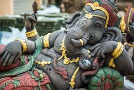
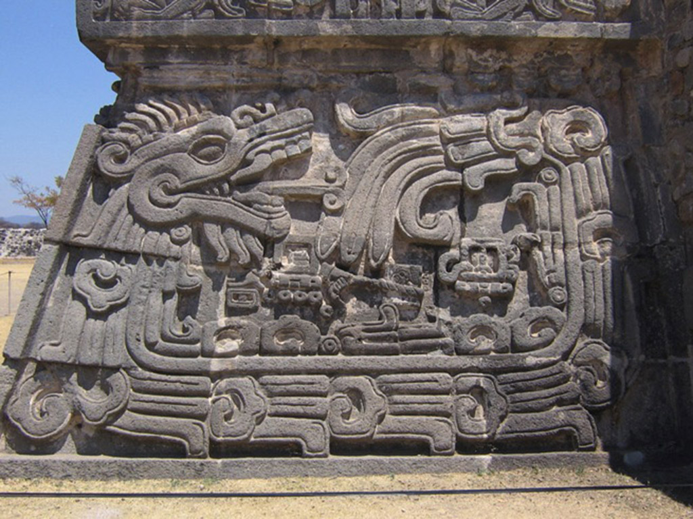
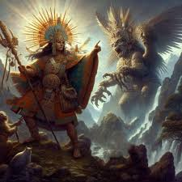
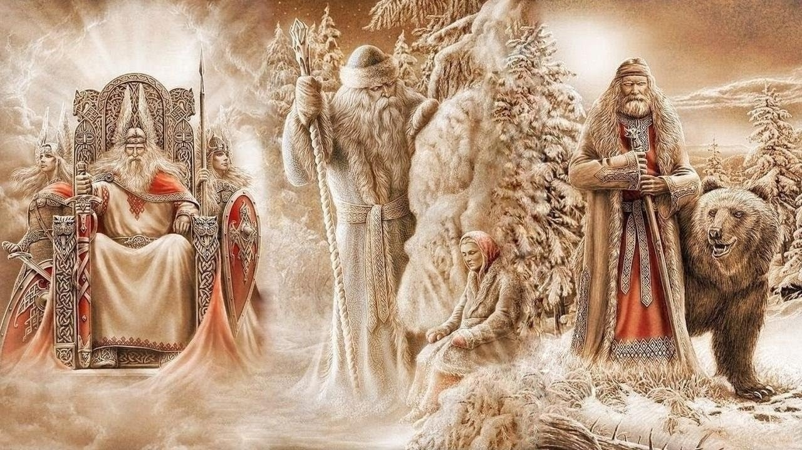
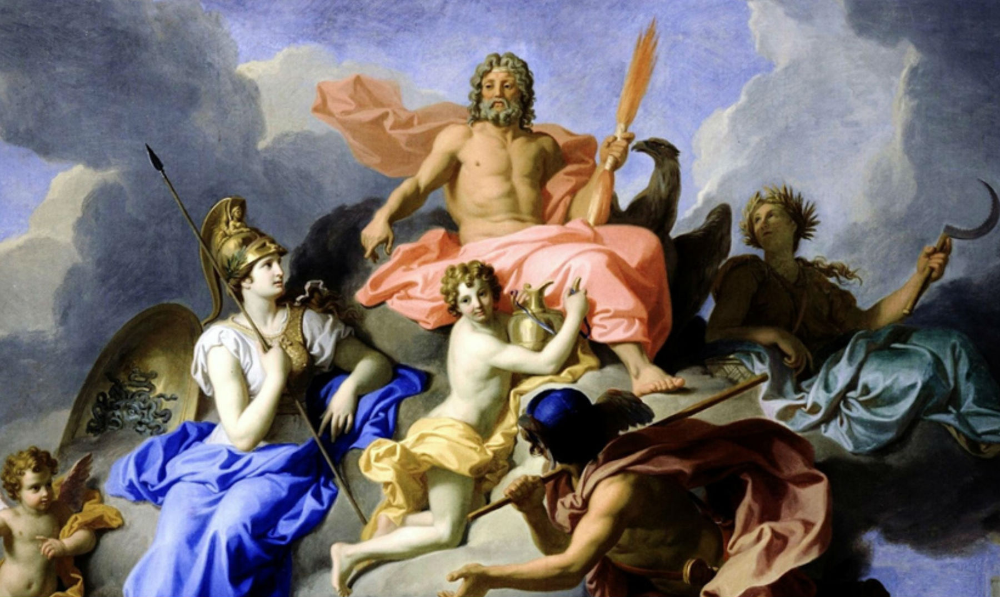
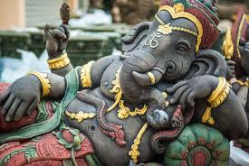
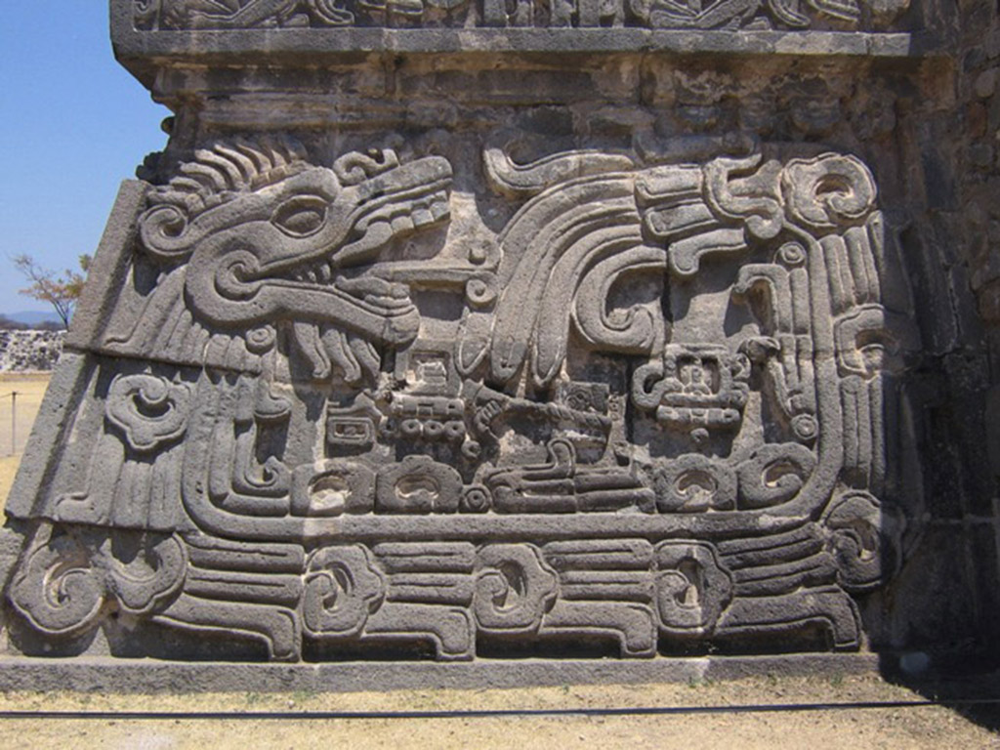
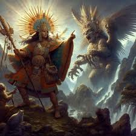
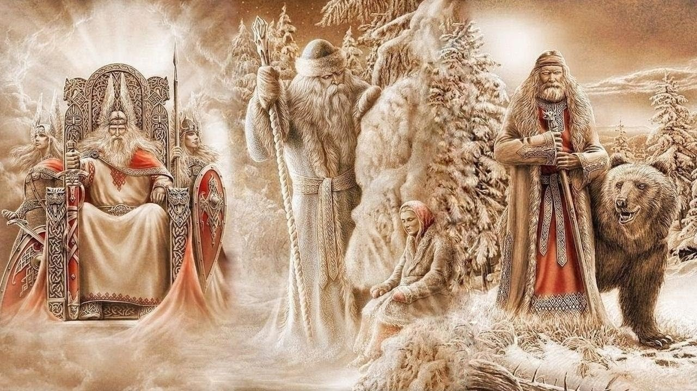
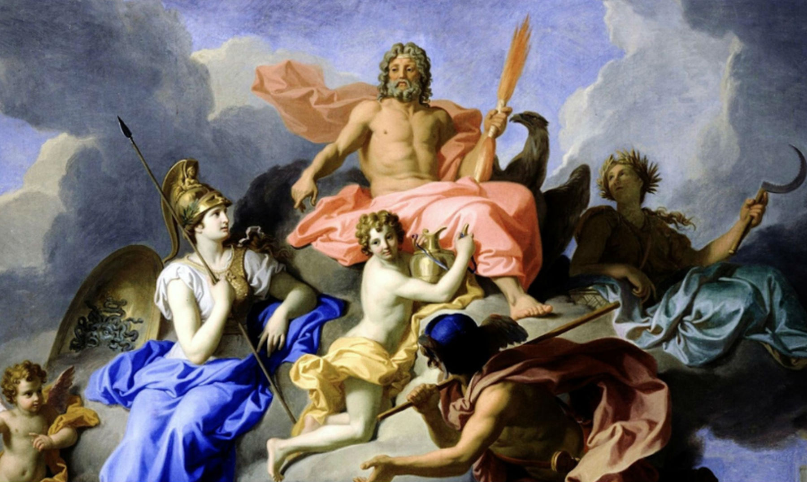

Mitología
La mitología es un conjunto de mitos relativamente cohesionados o paralelamente adheridos: relatos que forman parte de una determinada religión o cultura. También se les denomina mitos a los discursos, narraciones o expresiones culturales de origen sagrado, y que posteriormente fueron secularizados y tratados como discursos relativos a una cultura, a una época o a una serie de creencias de carácter imaginario.
Los mitos son relatos basados en la tradición y en la leyenda, creados para explicar el universo, el origen del mundo, los fenómenos naturales y así como también para cualquier suceso para el cual no haya una explicación conocida. Sin embargo, no todos los mitos tienen por qué tener este propósito explicativo. Igualmente, la mayoría de los mitos están relacionados con una fuerza natural o deidad, pero muchos son simplemente historias y leyendas que se han ido transmitiendo oralmente de generación en generación.
Etimología
El término griego "mythología" está compuesto por dos palabras:
- Mythos, que significa aproximadamente "el discurso" o "palabras con actos"
- Logos, que significa la expresión de los pensamientos o la habilidad para expresar los pensamientos

Pandora de John William Waterhouse. Pintada en 1896. Óleo sobre lienzo.
La mitología aparece de manera prominente en la mayoría de las religiones y, de igual modo, la mayoría de las mitologías están relacionadas con, al menos, una religión.
El término se suele usar más frecuentemente en este sentido para referirse a las religiones fundadas por sociedades antiguas, como la mitología griega, la mitología romana y la mitología escandinava. Sin embargo, es importante recordar que, mientras que algunas personas ven los panteones escandinavo y celta como meras fábulas, otros las consideran religiones (véase neopaganismo). Del mismo modo, ello también sucede al analizar las mitologías de los pueblos indígenas (ejemplo la Mitología de América del Sur); en el que se pueden observar casos en que aún se profesan las religiones nativas.
Generalmente, muchas personas no consideran los relatos que rodean al origen y desarrollo de religiones como el cristianismo, judaísmo e islam, como crónicas literales de hechos, sino como representaciones figurativas o simbólicas de sus sistemas de valores.
Aun así, igualmente, muchas personas entre ellos ateos, agnósticos, o creyentes de algunas de estas mismas religiones, emplean las palabras mito y mitología para caracterizar como falsas o a lo sumo dudosas, las historias que aparecen en una o más religiones, o a las religiones diferentes a la que es creyente. De este modo la gente que pertenece a la mayoría de las religiones que están presentes actualmente, se ofende cuando se toma a su fe como un conjunto de mitos; ya que para ellos, esto, equivale a decir que su religión en sí es una mentira, lo cual va en contra de sus creencias. Ejemplo de ello sucede en muchos grupos cristianos en relación con los relatos de la Biblia, en el cual sus creyentes no consideran, generalmente, que sean mitológicas algunas de sus historias, y que solo se usa esta palabra para referirse a ellas en un sentido peyorativo.
Sin embargo, la mayoría de la gente está de acuerdo con que cada religión tiene un conjunto de mitos que se ha desarrollado alrededor de sus escrituras religiosas; ya que en sí la palabra mito se refiere a hechos que no son posibles de ser verificados de manera objetiva. De este modo, igualmente se considera que se puede hablar de mitología judía, mitología cristiana o mitología islámica, para referirnos a los elementos míticos que existen en estas creencias; sin hablar de la veracidad de los principios de la fe o de las versiones de su historia; pues la creencia de su religión como algo verdadero compete a la fe y creencias de cada persona, y no del estudio de los mitos.
Ejemplo de ello, son los sacerdotes y rabinos de hoy en día dentro de los movimientos judíos y cristianos más liberales, además de los neopaganos, que no tienen problemas en admitir que sus textos religiosos contienen mitos. Así, ven sus textos sagrados como verdades religiosas, reveladas por inspiración divina, pero mostradas en el lenguaje del género humano. Aun así, como sucede en todo ámbito, otros, al contrario, no están de acuerdo con ello.
En el siguiente enlace puedes encontrar una tabla con ejemplos sobre el tema:
Gods Norse 








